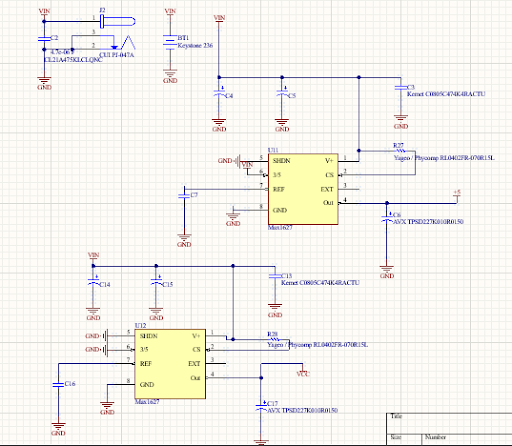
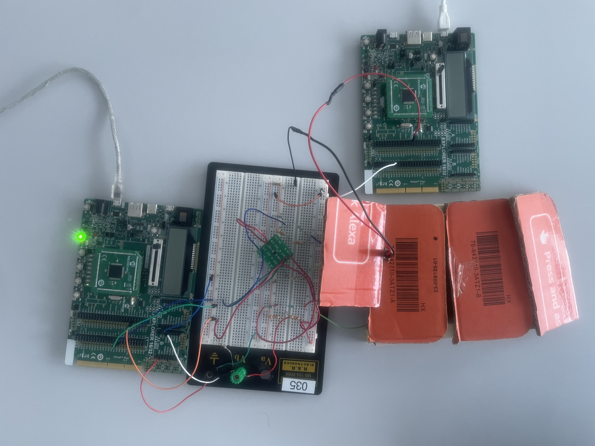

Photo Credits: URI ELECOMP and Rachel Schrager
Project Motivation
During my senior year in the electrical engineering program at URI, I have been able to be a part of Team VoltServer CLEAR sponsored by the company VoltServer from East Greenwich, Rhode Island. CLEAR stands for Colored LED Event Automated Reader and ties to the project's motivation. VoltServer wants to be able to read the LEDs from their products and determine their pre-programmed illumination patterns. One use case is for end-of-line testing in the manufacturing environment. This test device would be used to make sure that the LEDs work properly and are positioned in the correct place. This mundane task is currently being done in person but our product will automate this process. The members of Team CLEAR are shown on the left where you can see me, James Kaye, on the far right side of my colleagues.

My Power Schematic Design
Upgrading Power Systems
My first major addition to the project was to upgrade the old power system for the PCB.
Our PCB was going to decrease in size from the previous year's design so that was one factor to consider.
The previous power system used DC/DC converters which required extra space for capacitors and inductors on
the PCB. In order to simplify the design, I chose to use two voltage regulators that only needed a few
external capacitors instead of the DC/DC converters.

Our Current Testing Appatatus with Dev Boards
Designing a Testing Apparatus and Procedure
Next, we had to devise a way to test our sensor in different ambient lighting environments
and with the different LED colors we would need to decipher. We agreed on creating a simple setup that would
be cheap, mobile, and easy to manipulate. I suggested using a cardboard piece with a hole to hold the LEDs in
place since it would also allow us to easily change the LEDs and their angle of light onto the sensor. In
order to change the distance, we used ½ inch dowels so that we could move within a 0.5-2 inch range away from
our sensor quickly between tests. I then designed an excel sheet that would record all of our data from each
test and important information about the environment. After performing numerous tests, we compiled our data in
graphs so we could visualize how to build our algorithm for light detection based on color.